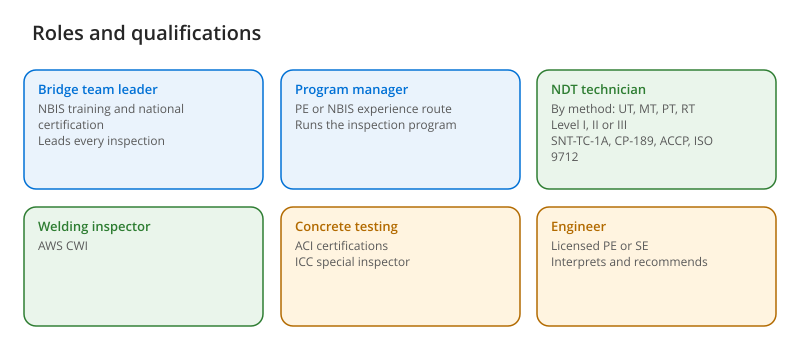

Who may inspect and test: qualifications
In one sentence: inspection and test results are only as good as the people who produced them, so owners and codes require specific qualifications for each role.

Bridge inspection (NBIS)
- Team leader: must meet the NBIS qualifications, including completing FHWA-approved bridge inspection training and being nationally certified as a bridge inspector, with required experience. Each inspection must be led by one.
- Program manager: a registered professional engineer or meets the experience and training requirements of the rule.
- Underwater bridge inspection divers and NSTM inspections have specific training requirements.
- Refresher training at set intervals.
See The National Bridge Inspection Standards.
NDT technicians
NDT certification is by method (UT, MT, PT, RT and others) and by level:
- Level I: performs specific tests under supervision.
- Level II: sets up and calibrates equipment, performs and interprets tests, reports results.
- Level III: develops procedures, interprets codes, trains and certifies others.
Common schemes: the employer-based ASNT SNT-TC-1A recommended practice, the ANSI/ASNT CP-189 standard, and central certification such as ASNT ACCP or ISO 9712 (common outside the U.S.). Welding inspection often requires an AWS Certified Welding Inspector (CWI).
Concrete testing and special inspection
- ACI certifications cover field and laboratory concrete testing.
- ICC special inspector certifications cover inspection during construction required by the building code.
- Laboratories are often accredited (AASHTO re:source, IAS, A2LA).
Engineers
Interpreting results, assessing structural capacity and recommending repairs usually falls to a licensed professional engineer, often a structural engineer for complex structures. In California, the Board for Professional Engineers, Land Surveyors and Geologists licenses them.
Radiation
Radiographers need training and a license holder's authorization under state radiation control rules. See Radiography (X-ray and gamma).
Common mistakes
- Accepting test results from technicians whose certification has expired.
- A Level I technician interpreting results alone.
- A report signed by someone outside the qualification the owner requires.